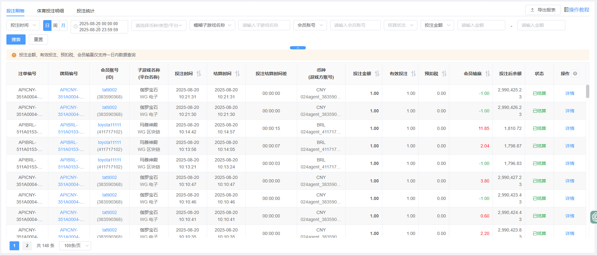

一、投注明细

- 搜索说明：可根据单一条件或组合查询对应的投注明细
- 投注时间：投注时间为默认选项，也可选结算时间，分别可点选日，周，月为搜索条件
- 日期：与日周月按钮可一起关联使用，选择开始日期到截止日期，为时间的搜索条件，左侧为时间icon，点选后可显示时间，右侧为x icon点击后以日周月按钮为搜索条件。
- 品牌: 可选择品牌进行筛选。(多品牌站点才会有此搜索条件)
- 会员币种：可选择全部币种或单一币种为搜索条件
- 请选择分类：可选择单一游戏类别（例如电子）可选择多种和全部类别（默认全部类别）
- 请选择平台：可选择单一平台或全部平台（默认全部平台）
- 子游戏名称：支持搜索模糊子游戏名称及精准子游戏名称
- 会员账号：可用会员账号/游戏方账号/注单编号/牌局编号为条件来进行搜索筛选
- 结算状态：可用已结算/未结算/已撤单为条件来进行搜索筛选
- 投注金额：可用投注金额/有效投注/会员输赢/预扣税为条件来进行搜索筛选，可设置金额的区间
- 牌局编号：点击快捷搜索同局注单
- 会员账号：点击显示【会员概览】
- 投注时间：该笔注单投注时间, 支持排序
- 结算时间：该笔注单结算时间, 支持排序
- 投注结算时间差: 结算时间减去投注时间的时间差值, 未结算及异常注单将显示“-”
- 预扣税: 预扣税金额, 持有巴西牌照的站点用户才会进行预扣税扣除
- 会员输赢：即会员在对应游戏的输赢记录（会员盈利为红；亏损为绿）
- 状态：已结算/未结算/已撤单
- 详情：即对应注单号在本局游戏的详情记录
- 强制撤销：针对「WG彩票」且状态为「未结算」的注单才支持操作撤销
- 点击查看：即对应注单号在本局游戏的具体游戏内容
- 自定义列: 可自行调整列表字段展示顺序
二、体育投注明细
- 搜索说明：查询某个会员在某时间段里各个平台的体育投注统计数据
- 投注时间：投注时间为默认选项，也可选结算时间，分别可点选日，周，月为搜索条件
- 日期：与日周月按钮可一起关联使用，选择开始日期到截止日期，为时间的搜索条件，左侧为时间icon，点选后可显示时间，右侧为x icon点击后以日周月按钮为搜索条件。
- 品牌: 可选择品牌进行筛选。(多品牌站点才会有此搜索条件)
- 会员币种：可选择全部币种或单一币种为搜索条件
- 请选择分类：可选择单一游戏类别（例如电子）可选择多种和全部类别（默认全部类别）
- 请选择平台：可选择单一平台或全部平台（默认全部平台）
- 子游戏名称：支持搜索模糊子游戏名称及精准子游戏名称
- 会员账号：可用会员账号/游戏方账号/注单编号/牌局编号为条件来进行搜索筛选
- 结算状态：可用已结算/未结算/已撤单为条件来进行搜索筛选
- 投注金额：可用投注金额/有效投注/会员输赢/预扣税为条件来进行搜索筛选，可设置金额的区间
三、投注统计
- 搜索说明：查询某个会员在某时间段里各个平台的投注统计数据（仅支持精准搜索）
- 占单量：该平台的注单量占所有平台注单量的占比，表现形式为百分比
- 获利比：该平台的获利比 = 该平台的损益 / 该平台的有效投注
- 预扣税: 预扣税: 预扣税金额, 持有巴西牌照的站点用户才会进行预扣税扣除
- 游戏名称：即会员在该时间段曾玩过的游戏，点击游戏名称后会将相关资讯带回投注明细并且筛选后展示
- 详情：显示对应注单号的游戏详情